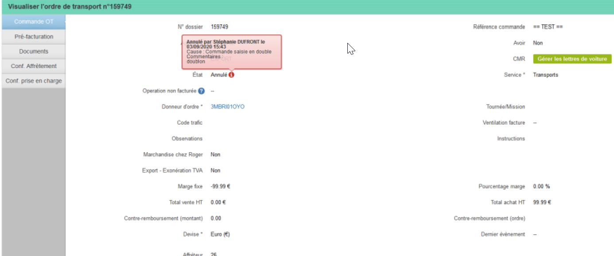
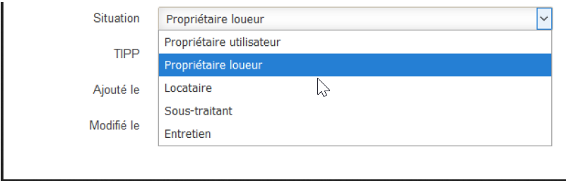

Livraison Décembre 2020
Vue cartographiée de la tournée
En faisant un clic droit sur la tournée :

Après avoir ouvert la pop-up de la tournée :

Visuel de la carte : en vert les points de chargement et en orange de déchargement

Planning : Vue complète des moyens, véhicules, conducteurs non affectés
En vert, les conducteurs disponibles
En bleu, les tracteurs disponibles
En orange, les remoques disponibles

En cliquant sur l’icône conducteurs disponible, vous ouvrez une fenêtre : vous visualisez les conducteurs disponibles et vous pouvez choisir l’agence et l’activité. Depuis cette pop-up, vous pouvez voir les tracteurs et remorques disponibles.

Pour qu'un moyen soit considéré comme "disponible" sur une journée, il faut qu'il ne soit lié à aucun transport, tournée, ordre de réparation ou absence sur cette journée. Il ne sera pas listé sinon.
Livraison Septembre 2020
Evolution planning
Détail de la tournée sur le planning avec actions
Actions sur une tournée (complément de l’existant)
- ::marker Réaffectation (conducteur, véhicule)
- ::marker Ordonnancement (grâce aux flèches sur la gauche)
- ::marker Accès retour de tournée
- ::marker Envoi TCFlow
- ::marker Visu et impression de l'ordre de mission
- ::marker Impressions des étiquettes
Action sur le segment
- ::marker Re-segmentation
- ::marker Détail la notion de CA - coût - achat = marge

Ajout de la marge dans la tournée

Traçabilité sur l’utilisateur qui annule un OT
Afin de comprendre une annulation d'OT, vous aurez maintenant l’information de l’utilisateur qui annule l’OT afin de faire l'analyse et la pédagogie si nécessaire.

Notion de véhicule interne / externe
Vous pouvez maintenant renseigner une notion de véhicule interne/Externe et de qualifier l'externe (Tractionnaire, locatier, location, prêt) avec une date de fin de validité sur les Externes.
Pour cela, utilisez le champs situation pour différencier l'interne de l'externe et autre :
- ::marker Propriétaire Utilisateur (visu planning)
- ::marker Propriétaire Loueur
- ::marker Sous-traitant (visu planning, le sous-type du véhicule n’est pas obligatoire)
- ::marker Entretien
- ::marker Locataire (visu planning, le sous-type du véhicule n’est pas obligatoire)
Ajout d'un champ adjacent pour justification en précisant le contexte
Ajout d’un filtre sur la situation/justification dans la liste véhicules
